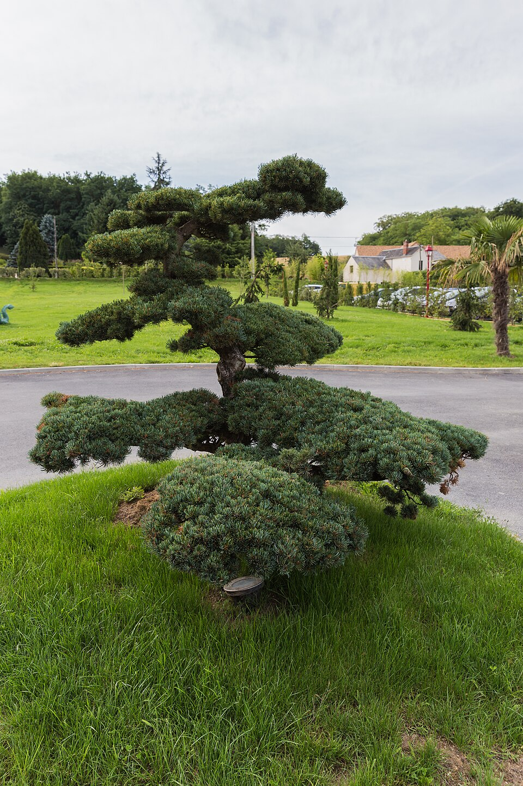

Taxus — Yew (Venijnboom)
An immortal poison-dripping elder that watched the Romans march past, laughs at death, regenerates from its own hollow corpse, and kills anything careless enough to eat its seeds — "support" in the sense that it supports the graveyard.
Combat flavor
Slow and near-unkillable, Taxus is the Support that doubles as a slow-burn poisoner. Its historical longbow role hints at a ranged poison-tipped attack; its extreme longevity could manifest as a passive resurrection or very high base HP.
Real-world facts
Typical / max height10–20 m; occasionally to 28 m
Lifespan1,500 years typical; up to 5,000 years claimed — one of the longest-lived trees in the world; hollow trunks make ring-counting impossible, so ages are often underestimated; flagged as exceptional long-lived / near living-fossil in European context
Wood~670 kg/m³ air-dry; Janka ~1,600 lbf (Pacific yew) — dense for a conifer, elastic, historically prized for longbows (English longbow)
Growth speedSlow (very tight annual rings)
Ecology / notable traitsAll parts except the fleshy red aril are highly toxic (taxine alkaloids — cardiotoxic); toxins can be absorbed via skin contact or sawdust inhalation; anti-cancer compound taxol (paclitaxel) derived from Pacific yew bark; extremely shade-tolerant; regenerates by layering and can re-sprout from a hollow trunk; deeply embedded in European death/immortality symbolism (planted in churchyards for millennia)
Gallery
